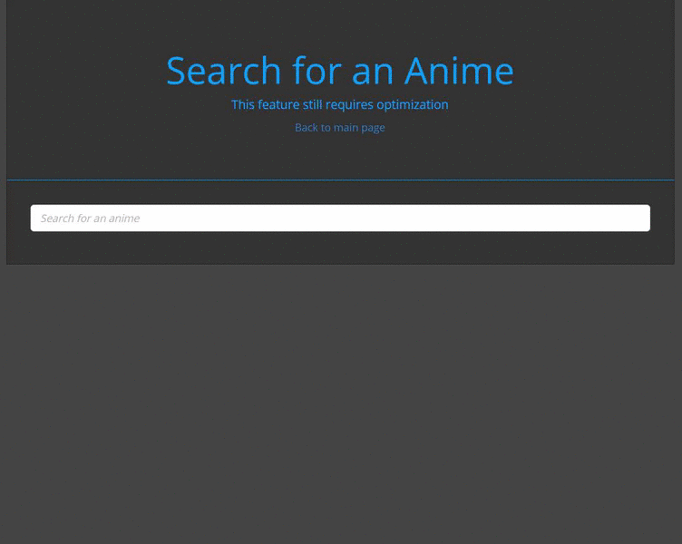
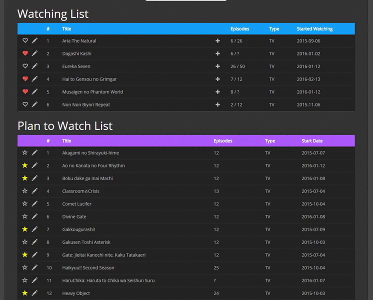

Feb. 2016
The TV list database is a SQL/PHP-focused project which I use to keep track of anime shows that I'm watching, that I plan on watching, completed etc.
To being populating your list, you begin by searching for an anime you would like to add to your list and adding it to the category of choice - Plan to Watch, Watching, Completed - and filling out any necessary information. The search utility will display up-to-date information about the series such as number of episodes, airing date etc.
Once in the list, you can perform a variety of actions on the list item. You can mark series that you are particularly enjoying, edit items, increment a series' watching episodes by one etc. The table is fully sortable by any of the criteria shown to help organize your list.
Clicking on list items will reveal an image for the series as well as a quick synopsis.
